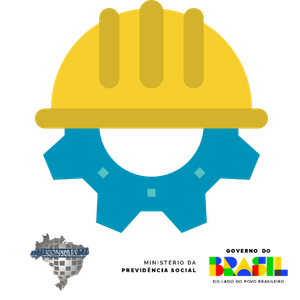

Intercâmbio técnico-institucional
RPPS e EFPC atuam em rede, compartilhando experiências que podem ser replicadas e adaptadas à realidade de cada ente federativo.
Troca estruturada de experiências, fortalecimento institucional e melhoria contínua da gestão previdenciária nos RPPS e EFPC.
Instituído pela Resolução Conaprev nº 05/2025, o Programa de Intercâmbio Técnico entre Regimes Previdenciários promove imersões presenciais em regimes Anfitriões, reconhecidos por suas boas práticas e nível de maturidade no Pró-Gestão RPPS, para capacitar dirigentes, conselheiros, servidores e colaboradores de Regimes Próprios de Previdência Social (RPPS) e Entidades Fechadas de Previdência Complementar (EFPC).
Imersões de 5 a 10 dias úteis em regimes Anfitriões para vivenciar, na prática, rotinas e soluções em:
Uma iniciativa do Conaprev para fortalecer a gestão previdenciária por meio do aprendizado entre pares.
O Programa de Intercâmbio Técnico entre Regimes Previdenciários foi instituído pela Resolução Conaprev nº 05/2025 como uma estratégia nacional de fortalecimento dos Regimes Próprios de Previdência Social (RPPS) e das Entidades Fechadas de Previdência Complementar (EFPC) que atuam junto a esses regimes.
Coordenado pela Comissão de Credenciamento e Avaliação do Pró-Gestão RPPS e com início previsto para o primeiro semestre de 2026, o Programa organiza a troca de experiências por meio de imersões presenciais de 5 a 10 dias úteis em regimes Anfitriões reconhecidos por suas boas práticas e por seu nível de maturidade institucional.
Durante as imersões, dirigentes, conselheiros, servidores e colaboradores dos regimes Intercambistas acompanham rotinas, processos e soluções adotadas em áreas como benefícios, cadastros, investimentos, compensação previdenciária, tecnologia, governança e controle interno.
RPPS e EFPC atuam em rede, compartilhando experiências que podem ser replicadas e adaptadas à realidade de cada ente federativo.
O Programa apoia a busca pela regularidade previdenciária, contribuindo para a obtenção e a manutenção do Certificado de Regularidade Previdenciária – CRP e para o avanço no Pró-Gestão RPPS.
Entenda os principais eixos que orientam o Programa de Intercâmbio Técnico entre Regimes Previdenciários.
Promover intercâmbio organizado entre RPPS e EFPC, conectando realidades diferentes e aproximando gestores que enfrentam desafios semelhantes.
Disseminar boas práticas de gestão, reforçar a conformidade previdenciária e contribuir para a regularidade do CRP.
Oferecer capacitação prática a dirigentes, conselheiros, servidores e colaboradores, diretamente nas rotinas dos regimes Anfitriões.
Estimular a cooperação técnica entre entes federativos e entidades gestoras, criando uma rede contínua de apoio e troca de soluções.
Um fluxo simples, mas estruturado, que organiza desde o credenciamento até o compartilhamento dos resultados.
RPPS e EFPC apresentam sua candidatura como regimes Anfitriões, demonstrando boas práticas de gestão e nível de maturidade no Pró-Gestão RPPS.
O Conaprev publica a lista de Anfitriões habilitados, com informações sobre perfil, áreas de destaque e possibilidades de imersão.
Dirigentes, conselheiros, servidores e colaboradores se inscrevem como Intercambistas, apresentando os documentos e requisitos exigidos.
São analisadas a compatibilidade de perfil, nível no Pró-Gestão, objetivos do plano de trabalho e a capacidade de recebimento dos Anfitriões.
O Intercambista realiza imersão presencial de 5 a 10 dias úteis, com agenda pactuada e acompanhada pela equipe técnica do Anfitrião.
Ao final, os participantes elaboram relatórios com resultados, compromissos e boas práticas que poderão ser replicadas, contribuindo para a melhoria contínua dos regimes.
O Programa é direcionado a Regimes Próprios de Previdência Social e EFPC que atuam com RPPS, em diferentes níveis de maturidade e estrutura.
São responsáveis por receber os Intercambistas, abrir suas rotinas e compartilhar suas experiências de gestão.
São os regimes que enviam dirigentes, conselheiros, servidores e colaboradores para vivenciar a experiência em um Anfitrião.
O Programa organiza as atribuições de cada parte de forma clara, garantindo segurança jurídica e previsibilidade administrativa.
Os detalhes operacionais, formulários de credenciamento e modelos de documentos serão definidos em ato específico e amplamente divulgados pelo Conaprev e pelos canais oficiais do Pró-Gestão RPPS.
O intercâmbio é pensado para gerar ganhos concretos na gestão previdenciária e na qualidade do atendimento aos segurados.
Melhoria da organização interna, revisão de fluxos de trabalho e padronização de procedimentos, reduzindo retrabalhos e gargalos.
Aperfeiçoamento dos mecanismos de controle, monitoramento e registro de informações, com foco em segurança e confiabilidade dos dados.
Fortalecimento da transparência, da prestação de contas e da imagem institucional dos regimes perante segurados, órgãos de controle e sociedade.
Avanços na regularidade previdenciária, no cumprimento de critérios do CRP e na elevação do nível de certificação no Pró-Gestão RPPS.
Se o seu regime já desenvolve boas práticas ou busca apoio para avançar em organização, controles e regularidade previdenciária, o Programa de Intercâmbio Técnico é o caminho para evoluir em rede.
| Inscrição | Município | UF | Unidade Gestora | Dirigente | Data solicitação | Data aceite MPS | Status |
|---|---|---|---|---|---|---|---|
| Carregando... | |||||||
| # | Inscrição | Município | UF | Unidade Gestora | Data solicitação | Plano de trabalho | Ação |
|---|---|---|---|---|---|---|---|
| Carregando... | |||||||
| # | Inscrição | Município | UF | Unidade Gestora | Dirigente | Data solicitação | Data aceite anfitrião | Plano de trabalho | Remover inscrição |
|---|---|---|---|---|---|---|---|---|---|
| Carregando... | |||||||||

| # | Município | UF | Unidade Gestora | Dirigente | Cargo/Função | Data solicitação | Credenciamento | Ação |
|---|---|---|---|---|---|---|---|---|
| Carregando... | ||||||||
| # | Inscrição | Município | UF | Unidade Gestora | Dirigente | Data solicitação | Data aceite MPS | Credenciamento | Intercambistas vinculados | Remover inscrição |
|---|---|---|---|---|---|---|---|---|---|---|
| Carregando... | ||||||||||